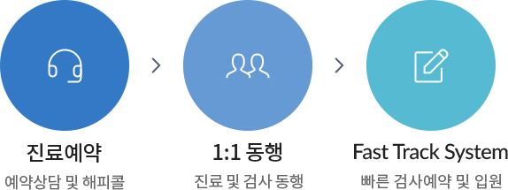
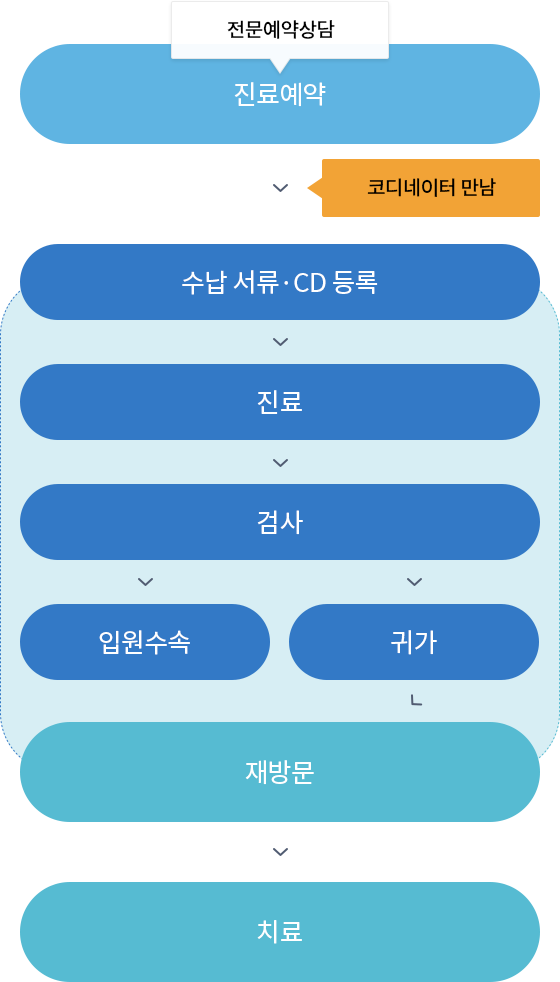

아주대학교병원 암센터에서는 암으로 진단받았거나 의심되어 처음 방문하시는 분들을 위해 암 전문코디네이터가 직접 상담 및 예약을 도와드리고 신속한 진료와 검사를 위한 1:1 동행 서비스를 제공합니다.

진료예약 전문예약상담 > 1:1동행 진료 및 검사 동행 > 패스트 트랙 시스템 빠른 검사예약 및 입원
진료절차

진료예약상담 후 코디네이터 만남 후 수납 서류 및 CD등록 후 진료 후 검사 후입원수속 혹은 귀가 후 재방문 후 치료
-
01
전문예약 상담
첫방문 암환자 전용 예약 전화 또는 전화번호를 남겨주시면 암 전문코디네이터가 직접 상담 및 예약을 진행해드립니다.
-
02
코디네이터 만남
예약 당일 본원 1층 고객안내센터에서 암 전문코디네이터와 만나 진료에 필요한 서류를 확인하고 영상CD등록 등 첫방문에 필요한 절차를 도와드립니다.
-
03
패스트 트랙·일대일 동행 서비스
- 암 전문코디네이터가 암센터 진료과와 검사실까지 일대일로 동행하며 신속하고 편안하게 치료진입이 이루어질 수 있도록 합니다.
- 중증암환자 등록과 입원 수속 또는 귀가에 이르기까지 당일에 이뤄지는 모든 과정에 대해 암 전문코디네이터가 동행하며 도와드립니다.